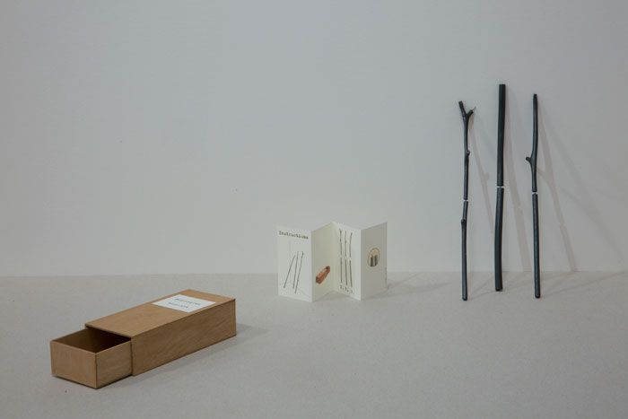
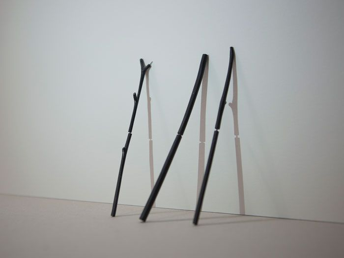
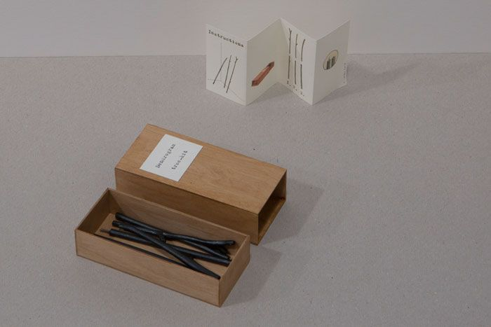

Dendrograma | Tree-kit (versão mini)
Colecção do Davis Lisboa Mini-Museum of Contemporary Art, Barcelona
Dendrograma | Tree-kit (versão mini) foi feito durante o processo de criação de uma peça de grandes dimensões, Dendrograma | Tree-kit, em resposta a um convite do Davis Mini-Museum of Contemporary Art, em Barcelona.
A miniaturização da caixa-contentor que guarda este pequeno desenho tridimensional em expansão acabou, por acaso, por lhe dar a forma de uma caixa de fósforos. A ligação à Total Art Match-Box (1965) de Ben Vautier trouxe as camadas de que o trabalho precisava para se resolver. A peça foi feita para residir na colecção do Davis Lisboa Mini-Museum of Contemporary Art.



Textos
- Dendrogram | Tree-kit (Mini Version)Catarina Leitão
Vídeo
- youtu.be/zttVNB-XOBEVídeo, cinematografia de Rui Pinheiro